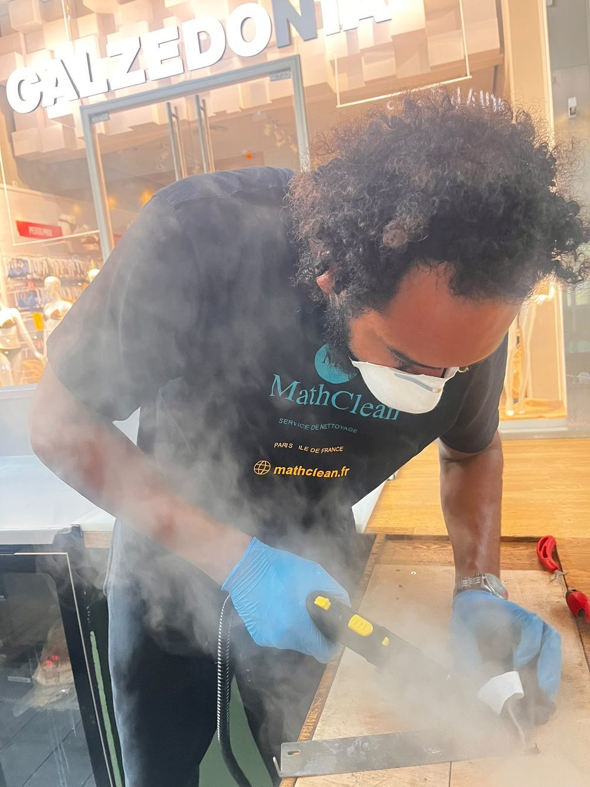
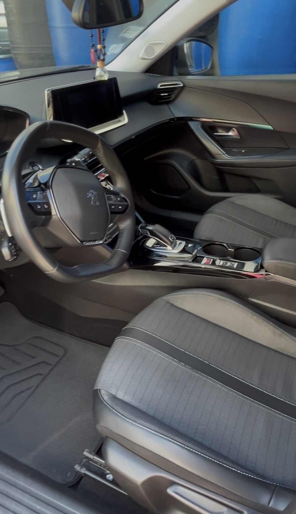
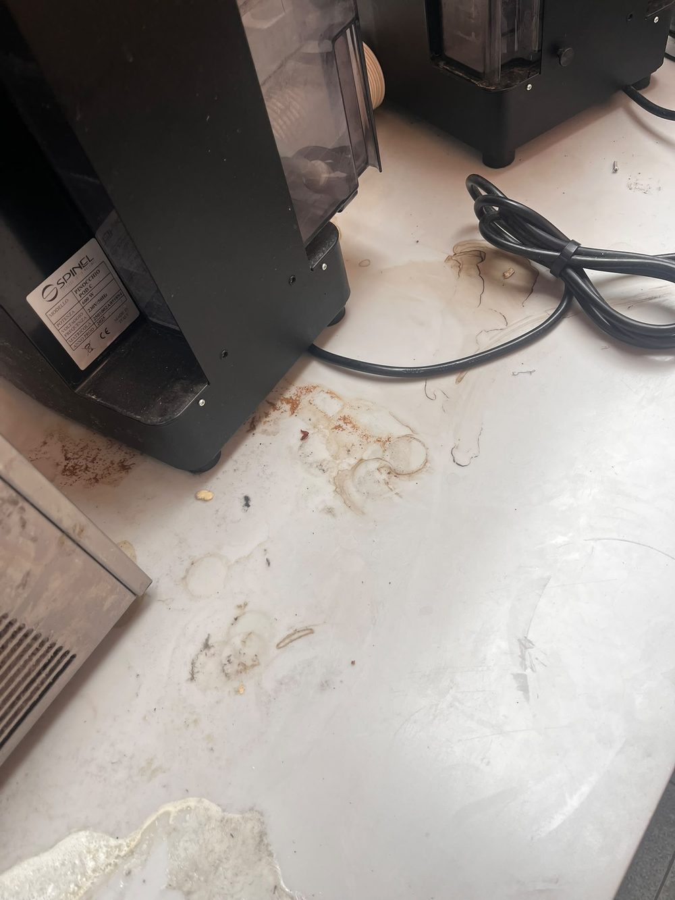
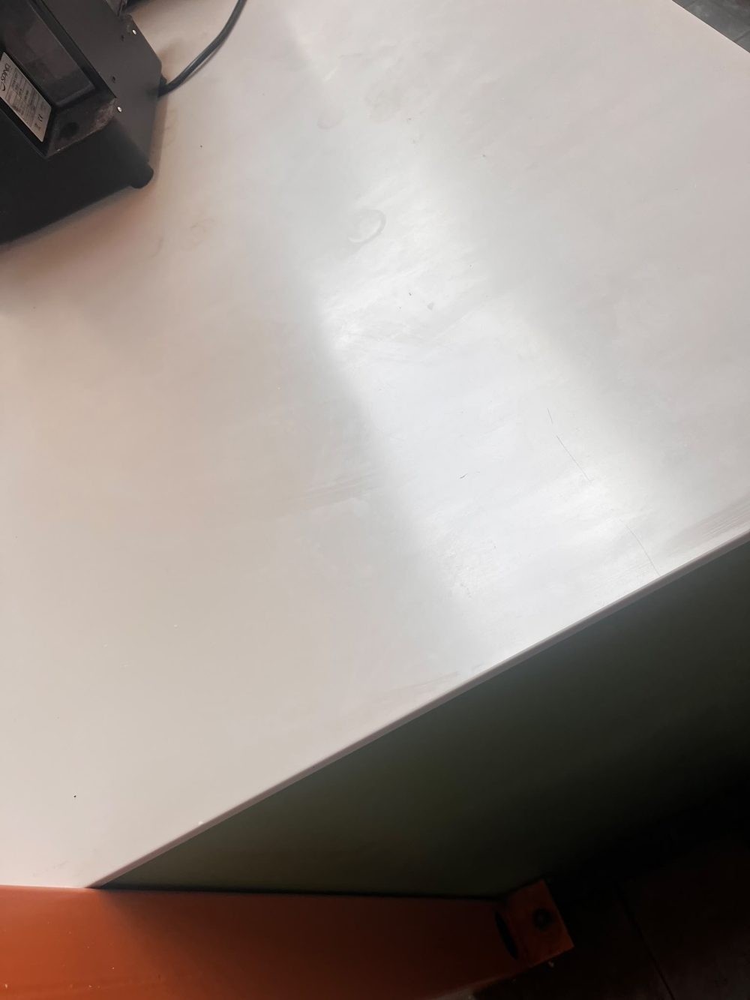
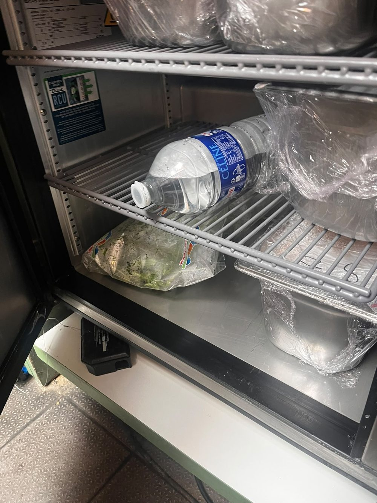
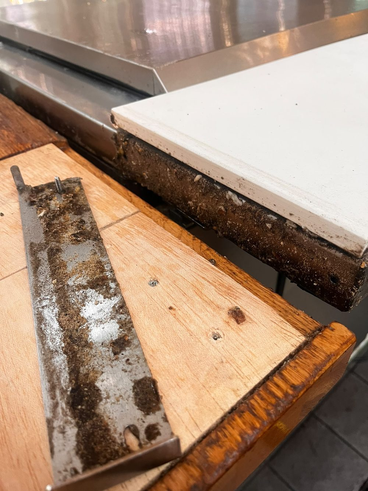
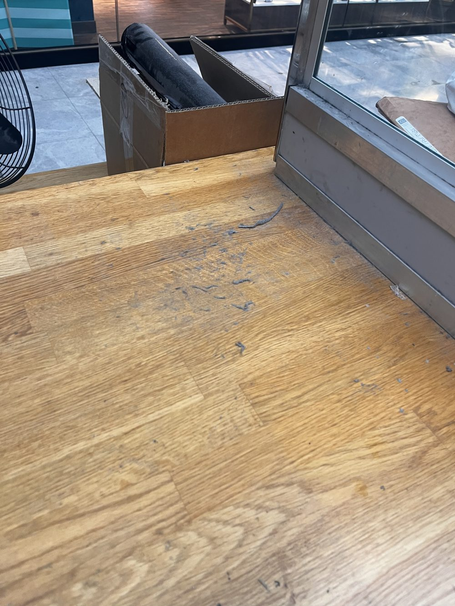
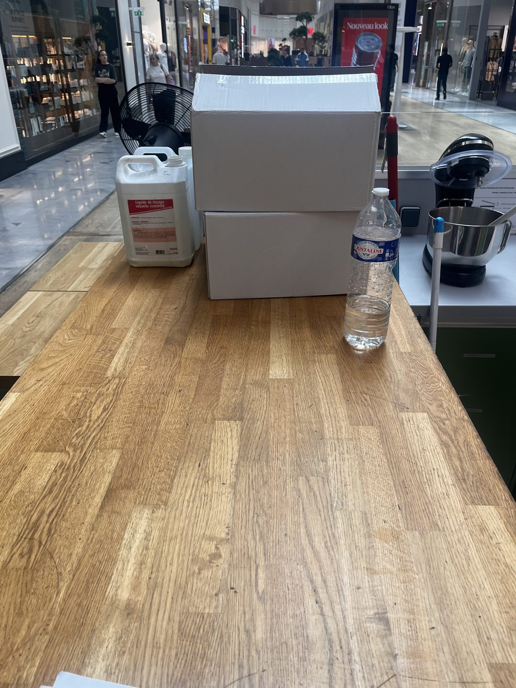

Intervention 7j/7
Nous intervenons 7j/7 pour répondre à toutes vos urgences, avec des prestations rapides et efficaces, même le week-end et les jours fériés.

Qui sommes-nous
Née d'une passion pour le travail bien fait, MathClean est votre entreprise de nettoyage à Paris et en Île-de-France. Nous redonnons tout leur éclat à vos canapés, matelas, tapis, véhicules, bateaux et espaces professionnels — directement chez vous, avec un savoir-faire haut de gamme.
Nos techniciens qualifiés se déplacent équipés d'un matériel professionnel et de produits sûrs pour votre famille comme pour vos animaux. Notre engagement : un résultat impeccable, un devis gratuit et transparent, et une exigence de roi à chaque intervention. C'est cette rigueur qui inspire confiance à des centaines de clients franciliens, 7j/7.
Nos résultats
Des interventions réelles réalisées par MathClean chez nos clients particuliers et professionnels. La différence parle d'elle-même.






Pourquoi nous choisir
Un service de nettoyage fiable, transparent et réactif, partout à Paris et en Île-de-France.
Nous intervenons 7j/7 pour répondre à toutes vos urgences, avec des prestations rapides et efficaces, même le week-end et les jours fériés.
Nous vous proposons un devis gratuit et sans engagement : une estimation claire, rapide et personnalisée pour tous vos besoins de nettoyage.
Nous nous déplaçons dans les meilleurs délais pour assurer un nettoyage professionnel et soigné, à votre domicile comme sur votre lieu de travail.
Notre équipe est formée aux techniques professionnelles les plus efficaces et utilise du matériel et des produits éco-responsables de qualité.
Nos prestations
Chaque prestation dispose de sa page dédiée. Cliquez pour découvrir le détail et réserver. Besoin d'un nettoyage de textile (canapé, matelas, tapis) ou d'un nettoyage voiture ? Retrouvez toutes nos prestations ci-dessous.

Detailing intérieur & extérieur, à domicile. Dès 49 € pour une citadine.
Voir la prestation →
Shampoing, injection-extraction et désinfection des tissus en profondeur.
Voir la prestation →
Élimination des acariens, taches et odeurs. Traitement anti-allergènes à domicile.
Voir la prestation →
Lavage en profondeur des fibres, ravivage des couleurs et détachage spécifique.
Voir la prestation →
Entretien nautique premium : coque, pont, sellerie. Sur la Seine et la Marne.
Voir la prestation →
Cabine, selleries cuir et cockpit de votre jet ou avion léger. Sur aérodrome.
Voir la prestation →
Nettoyage haute pression, traitement anti-mousse et hydrofuge des surfaces.
Voir la prestation →
Entretien professionnel de vos locaux et moquettes. Interventions régulières.
Voir la prestation →
Espaces de travail propres et sains. Désinfection et entretien de moquettes.
Voir la prestation →
Dépoussiérage, évacuation des gravats, lavage des vitres et remise en état.
Voir la prestation →En action
Quelques instants de nos interventions de nettoyage professionnel.



Où nous intervenons
MathClean réalise ses prestations de nettoyage premium à Paris et dans toute l'Île-de-France, avec un déplacement gratuit dans les huit départements franciliens.
Notamment à Boulogne-Billancourt, Neuilly-sur-Seine, Nanterre, Saint-Denis, Aulnay-sous-Bois, Tremblay-en-France, Créteil, Vitry-sur-Seine, Versailles, Argenteuil, Évry et Melun.
« Mon canapé en tissu clair est comme neuf. Travail méticuleux et ponctuel, je recommande vivement. »
« Detailing complet de ma voiture à domicile. Résultat bluffant, intérieur impeccable. Service haut de gamme. »
« Nettoyage de fin de chantier rapide et soigné avant la livraison de notre appartement. Parfait. »
« Ponctuel, discret et d'un professionnalisme rare. Ma berline n'a jamais été aussi impeccable. »
« Matelas et tapis traités à domicile, résultat sans odeur et impeccable. Service haut de gamme. »
« Entretien de nos bureaux chaque semaine, toujours nickel. Une équipe sérieuse et de confiance. »
Questions fréquentes
Les tarifs débutent à 49 € pour une citadine.
Oui, partout en Île-de-France, gratuitement.
Entre 1 h et 4 h selon la prestation.
Aspiration complète de tout l'habitacle, shampoing des tapis et moquettes, désinfection des allergènes et acariens par nettoyage haute température sur les sièges, le volant, les tapis et les surfaces planes. Le coffre est une option à 5 €.
Des questions à nous poser ?
Réponse rapide, devis gratuit et sans engagement.
Paris & Île-de-France — 75 · 77 · 78 · 91 · 92 · 93 · 94 · 95
Intervention sous 24h, déplacement gratuit